Initial prototype built · Final prototype in progress
Bench prototype · AIAA DBF 2026–27, Mission 3
1.007 kg
Sensor mass, measured — goal 1 kg
7 → 2
Printed sensor parts after the redesign
10 → 5
Screws to open and close the sensor
3
Light modes — off, solid, flashing
SolidWorksMechanism DesignDesign for AssemblyDesign for 3D PrintingGear TrainArduinoStability AnalysisMass & TrimBench Testing
⏳
Built and bench-run — not yet trialed against its goals. The winch has let the sensor out and reeled it back in from a table, and the lights have run through all three modes in a demo mode. The full goal trials — 9 ft runs, a fan test, lights changing on command over the cable — are the final prototype's job. Every number below is labelled as measured, shown on video, or estimated.
The Problem
The mission
The 2026–27 AIAA Design/Build/Fly Mission 3 asks a radio-controlled airplane to carry a sensor inside the aircraft, let it out on a cable to at least 1.5× the wingspan, switch its three lights between off, solid and flashing on command from the airplane, then reel it back in and hold it locked for landing.
For our MEMS 4110 design project, my team built that system as a bench prototype: a motor-driven winch on a test stand, its controller, and the sensor it carries. It does not fly. The point is to prove the mechanism, the cable path and the electronics on a bench, where a failure costs a reprint instead of an airplane.
What I Owned
The mechanical design of the winch, the sensor and the bench stand in SolidWorks: drum and gear train, the bellmouth that guides the cable head home, the servo-arm lock, and the sensor body.
The design calls behind them — layout, materials, mass and trim, fin sizing, winch clearance — each checked with a hand calculation or a CAD check before anything was printed.
Getting it made: print planning on the makerspace's 3D printers, a step-by-step build guide, and the test plan the team builds and films against.
Teammates did much of the soldering and wiring, and the build itself was a team effort.
The Winch
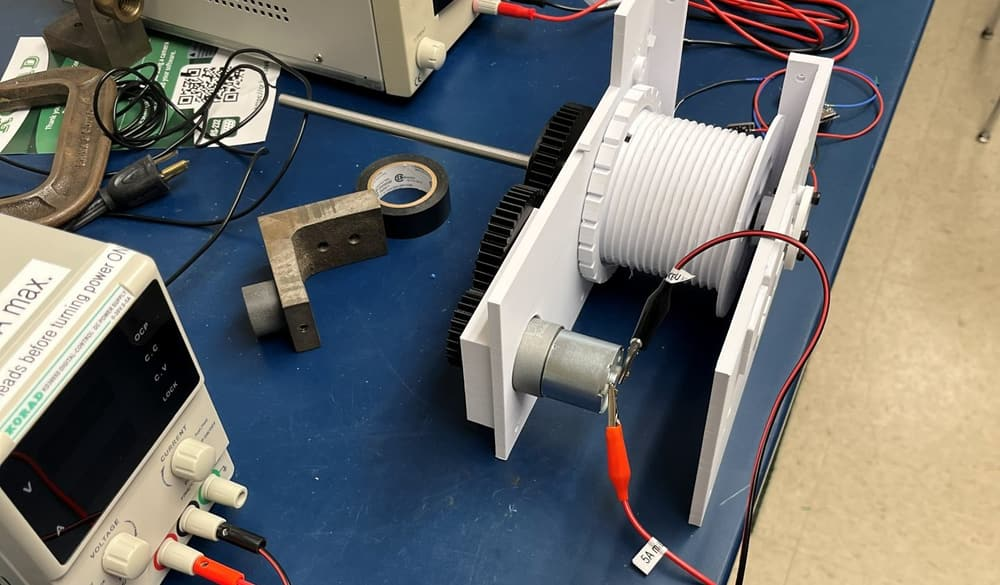
Built — on the bench supply. Printed side frames on an 8 mm steel rod, the cable drum between them, and the drive motor below.
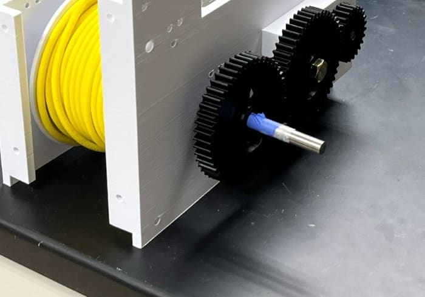
Drum and gear train. Motor pinion to a 48-tooth idler to a 48-tooth drum gear, with the tether wound on the drum.
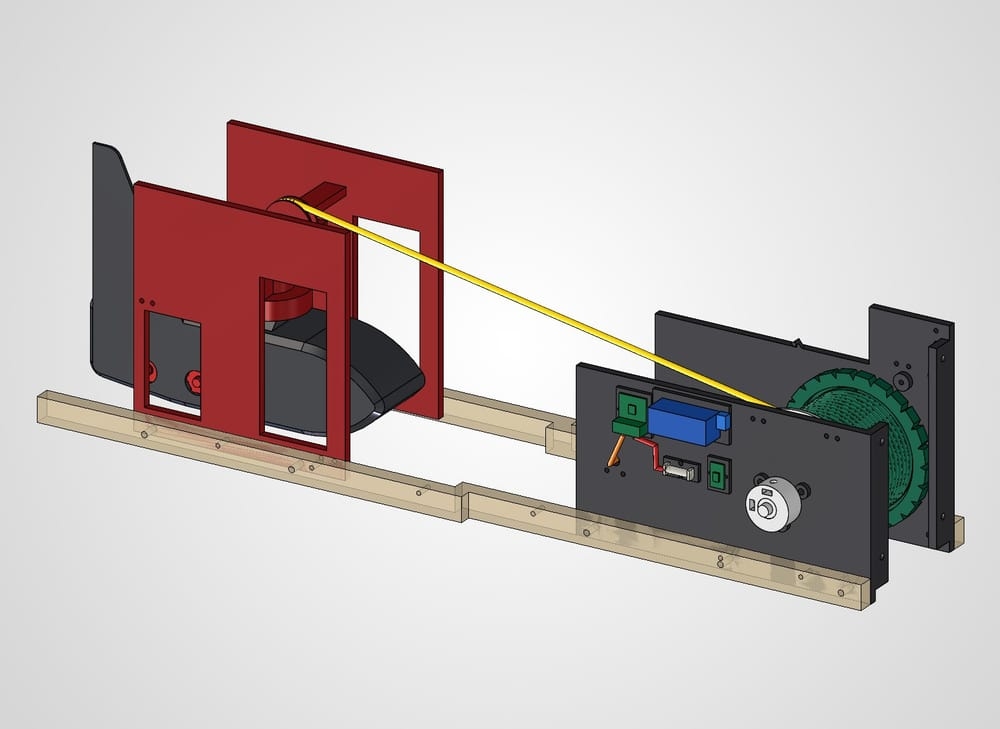
CAD — winch on its stand. The cable runs from the drum, over a pulley, and down through the bellmouth (red), which funnels the cable head back into its seat when it docks.
How it works
Out: the motor pays cable off the drum and the sensor drops through the bellmouth.
In: the drum reels it back; the cone on the cable head self-centres in the bellmouth's seat.
Lock: a hobby servo swings a printed arm under the head to hold it stowed.
Control: an Arduino Nano with a motor driver and an optical counter on the drum, commanded from a laptop.
Status: the out-and-back demo ran the motor straight from the bench supply. The servo lock and the Nano controller are designed and are the next things fitted.
Build Day One Failed — and Made It Simpler
First build session
The drum wouldn't turn: nothing coupled the 48-tooth gear to its shaft, and the studio couldn't cut or grind the stainless rod to add flats. Nobody could wind the lock's small spring by hand, and the tiny drilled holes in the prints were hard to make. The design assumed a machine shop the team didn't have.
The rule I set for the redesign
Studio tools only — a 3D printer, a hand drill and a soldering iron. No machining, no tapping, no hand-made springs, holes printed to size. The drum gear got a clamp hub: two set screws in captured nuts that grip the plain round rod. The spring lock became a servo swinging a printed arm. Both were redrawn the same day.
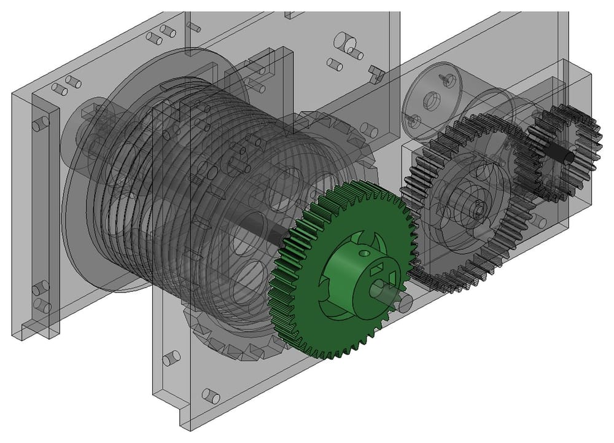
Fix 1 — clamp hub (CAD). The gear grips the round rod with set screws, so no flats have to be machined.
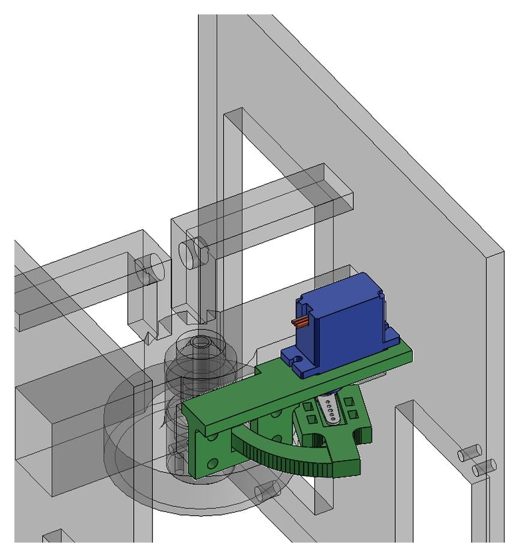
Fix 2 — servo-arm lock (CAD). A hobby servo swings a printed finger through the old bolt window under the cable head. No springs.
The Sensor — Redesigned for Assembly
Version 1 couldn't be assembled the way we built it
The first sensor body was laid out weight-first: steel shot filled the nose and tail, and the electronics got what was left — narrow channels, side bays and passages sized for a single wire. It assumed each board would be placed first and wired in place. The team built the wiring harness on the bench instead, and the finished harness — solder joints, heat-shrink and all — could not be fed into the pockets.
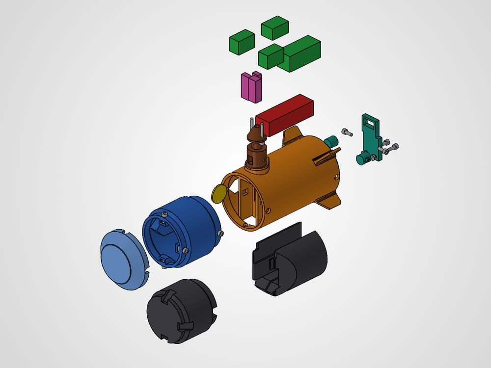
Before The first body — seven printed parts. Front cup, main body, nose cone, tail hatch and two fill plugs, plus a clip-on fin added in version 2. Ten screws to close.
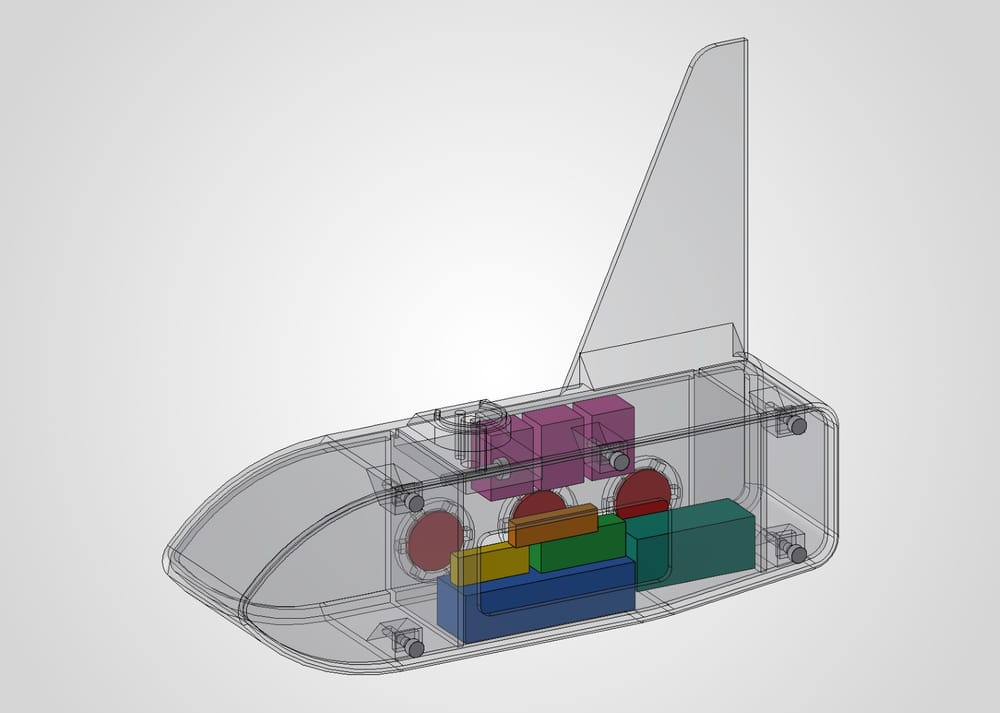
After Version 3 — one tub, one lid. The whole electronics bay opens in one plane; weights sit in sealed pockets at the two ends.
One load-carrying tub, one flat lid
I redrew the sensor as a single tub that carries everything structural — the cable cup and tie-off, three light windows and two weight pockets — and a flat side lid that only covers. Five screws off and the whole ~300 cm³ bay is open, even with the sensor hanging on its cable. The harness lays in from the side; nothing is threaded through a hole, and nothing has a fixed pocket, so a board a few millimetres off still fits.
Stability
Hangs from one point, so gravity holds pitch and roll
Only yaw is free — one swept fin behind the cable handles it
Fin sized with a Barrowman-style estimate: centre of pressure 12–33 mm behind the cable (estimate)
A deeper boattail looked better and failed the cautious case, so the belly stays shallow
Mass & Trim
1 kg target; 2–2.5 lb acceptable
Weights split 75 / 25 front to back, by grams
Weights sealed in the end pockets, away from the wiring
1.007 kg on the scale (measured)
Manufacturing
2 printed parts in one ~5 h print job
No supports: light side on the bed, 45° bevels on the bed edge
Holes and nut slots printed to size — nothing to drill or tap
Winch clearance checked in CAD at every twist from −12° to +12°
One call worth showing: I first specified PETG because the LED boards run warm. When the printer with the shortest queue only had PLA loaded, I checked instead of waiting — a star board settles around 50–60 °C, close to where PLA softens, but the ledge it sits on carries no load and the walls see about 0.03 MPa. PLA was fine, and it printed that day.
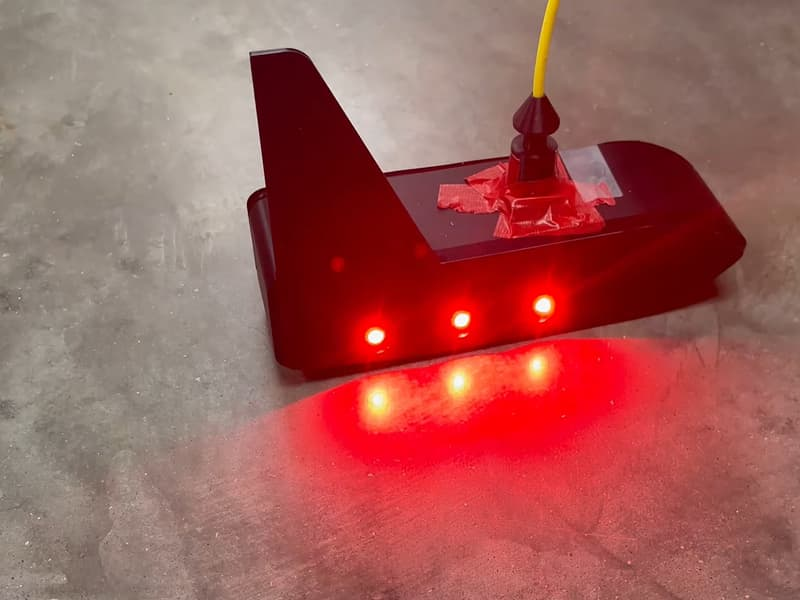
Built — lights on. The printed tub with its three lights running.
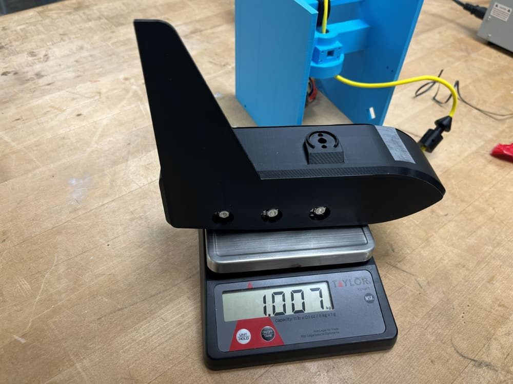
1.007 kg, measured — against a 1 kg goal.
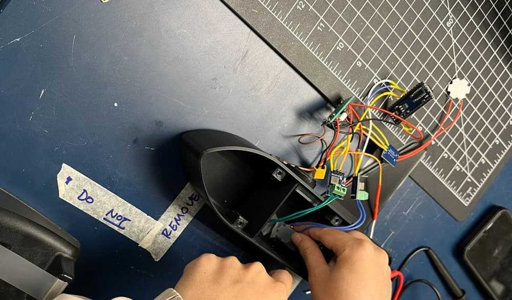
Harness in from the side — the lid off, the bay open.
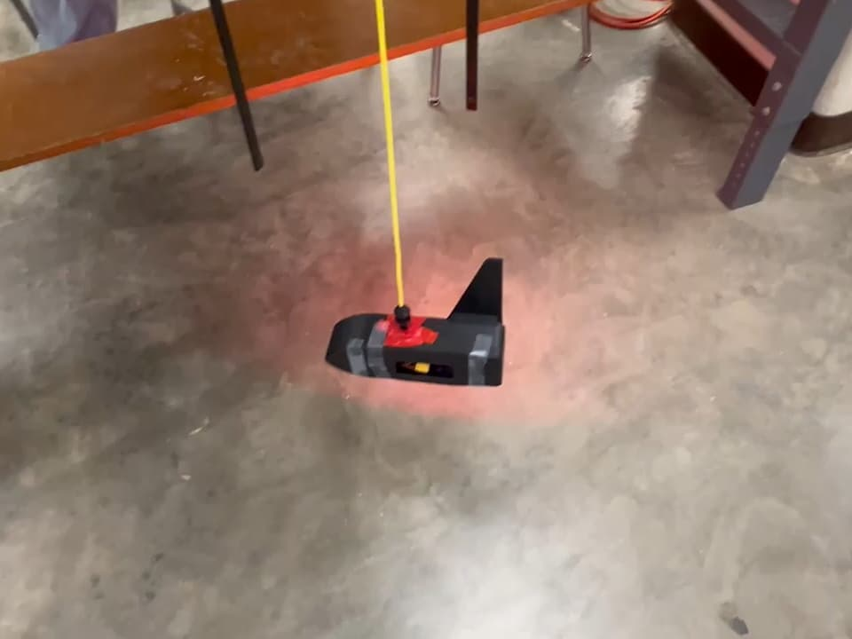
Hanging on the tether — still air; the fan test is next.
Results So Far
The goals were written so a video can prove them. Where a result is partial, it says so.
Goal
Target
Where it stands
Sensor mass
1 kg (2–2.5 lb acceptable)
Measured 1.007 kg
Out and back
9 ft (108 ± 1 in) out, then back in to fully stowed
Shown, short Out and back from a table, motor on the bench supply. Full 9 ft runs are next.
Stability in moving air
0 full spins in 30 s of blower air, nose into the wind
Next Hung in still air only. The fan test is planned.
Lights
Off, solid and flashing on command over the cable
Shown, demo mode All three modes ran on their own. The on-command test is next.
Next: the final prototype — a compact winch module, the light command sent down the cable, and a drive chosen from the test data — then the full goal trials, filmed.
What I've Learned So Far
Design for how it actually gets built
The first sensor was correct in CAD and impossible on the bench, because it assumed an assembly order nobody followed. The redesign started from the real sequence — harness built first, then laid in — and the part count, screw count and fit tolerance all fell out of that one question.
Constraints are design inputs
Day one failed on things a machine shop would never notice: flats on a steel rod, a hand-wound spring, a tiny drilled hole. Writing the studio's real capabilities down as rules — print it, drill it by hand, or don't use it — made the second design simpler and faster to build than the first.
A goal you can't measure isn't a goal
The stability goal started as "30 mph, within ±15°" — neither of which the team could measure on a bench. It became "zero full spins in 30 seconds of blower air", which a phone video can prove or disprove. Same intent, and now it can actually fail.
Check the assumption, not the habit
PETG was a reasonable default for parts near a warm LED. A ten-minute heat and stress check showed PLA was fine for this part, which turned a wait for the right printer into a same-day print.